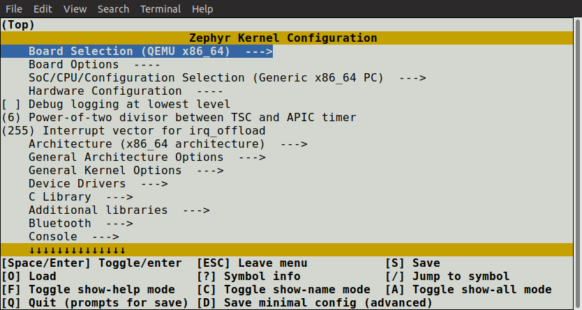
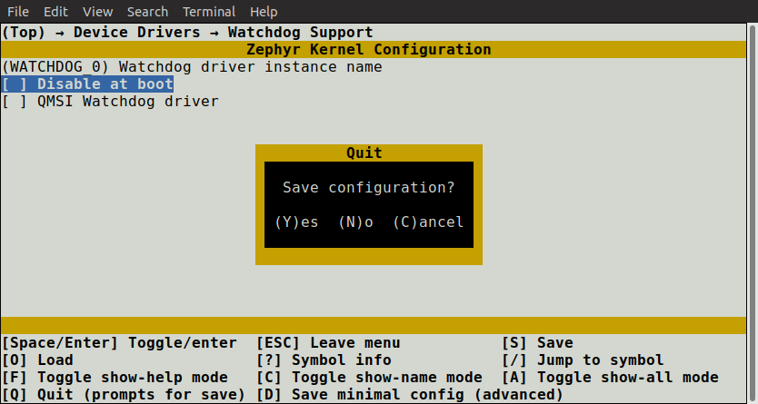
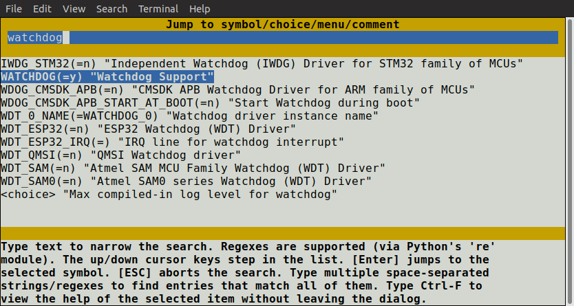
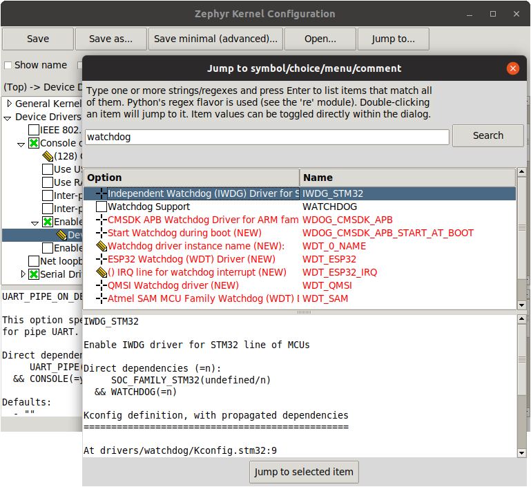

交互式 Kconfig 界面
有两种交互式配置界面可用于浏览可用的 Kconfig 选项并进行临时修改：menuconfig 和 guiconfig。menuconfig 是在终端中运行的基于 curses 的界面，而 guiconfig 是图形化配置界面。
备注
也可以手动编辑应用程序构建目录中的 zephyr/.config 来修改配置。不过使用配置界面通常更方便，因为它们能正确处理配置符号之间的依赖关系。
如果尝试在 zephyr/.config 中启用依赖未满足的符号，该赋值会被忽略，并在重新配置时被覆盖。
要使某项设置永久生效，应在 *.conf 文件中设置它，如 设置 Kconfig 配置值 中所述。
小技巧
在使设置永久生效时，保存一个最小配置文件（例如在 menuconfig 中按 D）并查看它会很方便。最小配置文件只列出与默认值不同的符号。
按以下步骤运行配置界面：
照常使用
west或cmake构建应用程序：Using west:
west build -b <board>
Using CMake and ninja:
mkdir build && cd build cmake -GNinja -DBOARD=<board> .. ninja
要运行基于终端的
menuconfig界面，可使用以下任一命令：west build -t menuconfig
ninja menuconfig要运行图形化的
guiconfig，可使用以下任一命令：west build -t guiconfig
ninja guiconfig备注
如果在尝试运行
guiconfig时遇到tkinter导入错误，说明缺少所需的软件包。请参阅 安装 Linux 主机依赖项。所需的软件包通常名为python3-tk/python3-tkinter之类。尽管
tkinter属于标准库，但许多 Python 安装默认并不包含它。两种界面如下所示：


guiconfig始终会在底部窗格中显示当前选中项的帮助文本和其他相关信息。在终端界面中，按 ? 可查看相同的信息。备注
如果你更喜欢使用
guiconfig界面，最好在 单菜单模式 下检查你对 Kconfig 文件所做的修改，该模式通过顶部的复选框切换。与全树模式不同，单菜单模式会区分用config定义的符号和用menuconfig定义的符号，从而显示这些内容在menuconfig界面中的样子。在
menuconfig界面中按以下方式修改配置值：使用方向键浏览菜单。也支持常见的 Vim 键绑定。
使用 Space 和 Enter 进入菜单和切换值。菜单旁边显示有
--->。按 ESC 返回上一级菜单。布尔配置选项以 [ ] 括号显示，而数值和字符串类型的配置符号以 ( ) 括号显示。无法修改的符号值显示为 - - 或 -*-。
备注
也可以按 Y 或 N 将布尔配置符号设置为相应的值。
按 ? 可显示当前选中符号的信息，包括其帮助文本。按 ESC 或 Q 可从信息显示返回菜单。
在
guiconfig界面中，可以单击符号旁边的图标来修改其值，也可以双击该符号所在的行（仅当符号没有子项时有效，因为双击带有子项的符号会展开/折叠其菜单）。guiconfig也支持键盘操作，与menuconfig类似。在
menuconfig界面中按 Q 会弹出保存并退出对话框（如果有需要保存的修改）：
按 Y 将内核配置选项保存到默认文件名（
zephyr/.config）。除非在试验不同的配置，否则通常都保存到默认文件名。如果配置已被修改，
guiconfig界面在退出时也会提示保存配置。备注
构建时使用的配置文件始终是
zephyr/.config。如果想用另一份已保存的配置进行构建，请将其复制到zephyr/.config。务必先备份原来的配置文件。另请注意，在 Linux 和 macOS 上，
ls默认不会列出以.开头的文件名。使用-a选项可以看到它们。
在菜单树中查找并定位到某个符号可能很繁琐。要直接跳转到某个符号，请按 / 键（在 guiconfig 中同样有效）。这会弹出以下对话框，可以在其中按名称搜索符号并跳转过去。在 guiconfig 中，还可以直接在该对话框中修改符号值。


如果跳转到当前不可见的符号（例如因为其依赖未满足），则会启用 全部显示模式。在全部显示模式下，会显示所有符号，包括当前不可见的符号。要关闭全部显示模式，请在 menuconfig 中按 A，或在 guiconfig 中按 Ctrl-A。
备注
如果当前菜单中没有可见项，则无法关闭全部显示模式。
要弄清跳转到的符号为什么不可见，请查看其依赖关系：在 menuconfig 中按 ?，或查看 guiconfig 底部的信息窗格。如果发现该符号依赖于另一个未启用的符号，可以继续跳转到那个符号，看看能否启用它。
备注
在 menuconfig 中，可以按 Ctrl-F 查看跳转对话框中当前选中项的帮助，而无需离开该对话框。
有关 menuconfig 和 guiconfig 的更多信息，请参阅 menuconfig.py 和 guiconfig.py 开头的 Python 文档字符串。